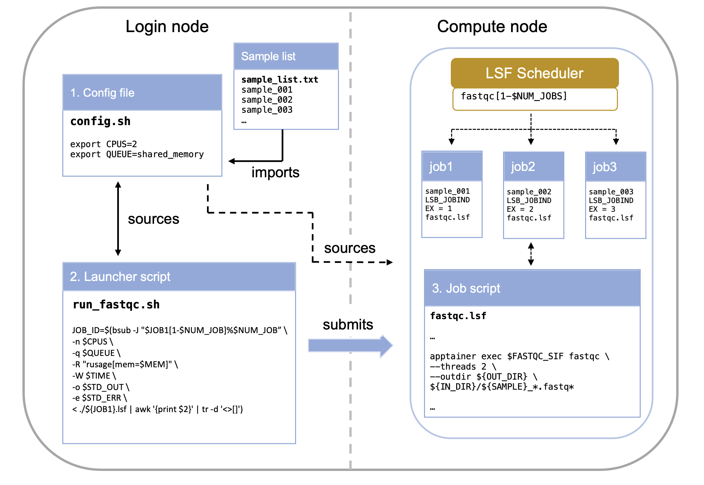

BRC Documentation: Parallel Jobs
04. Scaling Up: Running Parallel Jobs with Job Arrays
When you have hundreds of independent tasks—like processing a long list of sequencing samples—submitting them one by one is inefficient. A Job Array allows you to submit one job to the scheduler, which then launches many instances (sub-jobs) concurrently, each tailored to process a different item.
- Efficiency: Submit once, run many times
- Resource Management: Control concurrent execution
- Simplified Tracking: One parent job ID for all tasks
- Scalability: Easily process 10 or 1,000 samples
The Core Concept: The Job Index
The key to a Job Array is the environment variable that the scheduler automatically sets for each sub-job: $LSB_JOBINDEX.
$LSB_JOBID: The unique ID for the entire array (the parent job)$LSB_JOBINDEX: The index number for each individual sub-job (e.g., 1, 2, 3…)- Array ID Format: When running, a sub-job’s ID appears as
JOBID[JOBINDEX], e.g.,12345[1],12345[2], etc.
If you submit an array with #BSUB -J "myjob[1-100]", LSF will create 100 sub-jobs. The first will have $LSB_JOBINDEX=1, the second $LSB_JOBINDEX=2, and so on through 100.
Anatomy of the Array System
Running a Job Array typically involves two primary scripts working together:
- The Config File: Stores environmental variables and paths
- The Launcher Script: Submits the job to LSF and defines the array size
- The Job Script: Uses
$LSB_JOBINDEXto select and process a single item

Component 1: The Config File (config.sh)
The config file centralizes all variable elements of your pipeline, making it easy to modify parameters without editing multiple scripts.
What belongs in the config file:
- File paths (input lists, output directories)
- Resource requirements (CPUs, memory, time limits)
- Software parameters (trimming thresholds, quality cutoffs)
- Job names and dependencies
export ID=MY_ID
export IN_LIST="/your/path/to/repo/sample_list.txt"
export IN_DIR="/path/to/raw_reads"
export FASTQC_SIF="/path/to/container/image"
# Create output directory if it doesn't exist
mkdir -p /path/to/working/dir/01_raw_fastqc_results
export OUT_DIR="/path/to/working/dir/01_raw_fastqc_results"Always validate that critical files exist before launching jobs. This prevents wasting compute time on jobs that will fail immediately.
Component 2: The Launcher Script (run_fastqc.sh)
This script runs on the login node and orchestrates job submission.
$ ./run_fastqc.shIts primary function is to calculate the total number of tasks needed and submit the array definition using the bsub -J directive.
#! /bin/bash
# load job configuration
source ./config.sh
# make sure sample file is in the right place
if [[ ! -f "$IN_LIST" ]]; then
echo "$IN_LIST does not exist. Please provide the path for a list of datasets to process. Job terminated."
exit 1
fi
# create a variable with the job name
export JOB1="fastqc" # this is not necessary but will be useful for consistency in larger pipelines
# get number of samples to process
# the number of samples will be used to set the range of the job array
export NUM_JOB=$(wc -l < "$IN_LIST")
# submit job arrays for each step
echo "launching ${JOB1}.lsf as a job."
JOB_ID=`bsub -J "$JOB1[1-$NUM_JOB]%$NUM_JOB" < ${JOB1}.lsf`source ./config.shLoads parameters (like the list of samples) from a separate configuration file.$(wc -l < "$IN_LIST")Calculates the number of tasks required (the end index of the array).-J "$JOB1[1-$NUM_JOB]%$NUM_JOB": Array syntax with optional concurrency limit
| Component | Example Value | Description |
|---|---|---|
| $JOB1 | fastqc |
This is the base name for the job array. Individual sub-jobs will be named, for example, fastqc[1], fastqc[2], etc. |
| [1-$NUM_JOB] | e.g., [1-50] |
This defines the range of the job array. It means the array will consist of sub-jobs with indices starting from 1 up to the value of $NUM_JOB (which is the number of lines in your input file). Each sub-job will process one line/sample. |
| %$NUM_JOB | e.g., %50 |
This is the crucial concurrency limit. It specifies the maximum number of sub-jobs from this array that LSF is allowed to run at the same time (concurrently). |
The %N syntax prevents overwhelming the filesystem or scheduler. For large arrays (>100 jobs), consider limiting to 20-50 concurrent jobs.
Component 3: The Job Script (fastqc.lsf)
This script contains the actual work to be performed on the compute nodes.
# fastqc.lsf - Job script for FastQC analysis
# --------------------------------------------------
# Request resources here
# --------------------------------------------------
#BSUB -n 2 # number of CPUs required per task
#BSUB -q shared_memory # the queue to run on
#BSUB -R "span[hosts=1]" # number of hosts to spread the jobs across, 1 host used here
#BSUB -R "rusage[mem=4GB]" # required total memory for the job
#BSUB -o "./output.%J_%I.log" # standard output file (%J is job name)
#BSUB -e "./error.%J_%I.log" # standard error file (%I is job ID)
#BSUB -W 10:00 # time to run
# --------------------------------------------------
# Load modules here
# --------------------------------------------------
module load apptainer
# --------------------------------------------------
# Execute commands here
# --------------------------------------------------
# Print job start information
echo "=================================================="
echo "Job started: $(date)"
echo "Job ID: $LSB_JOBID"
echo "Running on host: $(hostname)"
echo "Working directory: $(pwd)"
echo "=================================================="
# Source config file and get sample name from input list based on job array index
source ./config.sh
export SAMPLE=`head -n +${LSB_JOBINDEX} $IN_LIST | tail -n 1`
# --------------------------------------------------
# Validate inputs
# --------------------------------------------------
# Check if container exists
if [ ! -f "${FASTQC_SIF}" ]; then
echo "ERROR: Container not found at ${FASTQC_SIF}"
exit 1
fi
# Check if input directory exists
if [ ! -d "${IN_DIR}" ]; then
echo "ERROR: Input directory not found at ${IN_DIR}"
exit 1
fi
# --------------------------------------------------
# Execute FastQC
# --------------------------------------------------
echo "Running FastQC on sample: ${SAMPLE}"
apptainer exec ${FASTQC_SIF} fastqc \
--threads 2 \
--outdir ${OUT_DIR} \
${IN_DIR}/${SAMPLE}_*.fastq*
# Check if FastQC completed successfully
if [ $? -eq 0 ]; then
echo "FastQC completed successfully"
else
echo "ERROR: FastQC failed with exit code $?"
exit 1
fi
# --------------------------------------------------
# Job completion
# --------------------------------------------------
echo "=================================================="
echo "Job completed: $(date)"
echo "Results saved to: ${OUT_DIR}"
echo "=================================================="Critical concept: The line export SAMPLE=head -n +${LSB_JOBINDEX $IN_LIST | tail -n 1 is what makes each sub-job unique. It extracts the Nth line from your sample list, where N is the job index.
$LSB_JOBINDEX
- Job 1 gets line 1:
sample_001 - Job 2 gets line 2:
sample_002 - Job 3 gets line 3:
sample_003
This allows one script to process all samples!
Resource Specification: Three Approaches
There are multiple ways to specify compute resources. Up to now we have been “hardcoding” (typing the exact value) the resource request in the job script. While the simplest method, this is however not the recommended one. It is commonly accepted as best practice to only modify the config file when adapting a pipeline. In that case, we would want to create the necessary variables in the config file and then pass them to the job via the launcer. Let’s see how this works.
Approach 1: Hardcoded in Job Script (Simplest)
This is the approach we have been using so far in this training.
# --------------------------------------------------
# Request resources here
# --------------------------------------------------
#BSUB -n 2 # number of CPUs required per task
#BSUB -q shared_memory # the queue to run on
#BSUB -R "span[hosts=1]" # number of hosts to spread the jobs across, 1 host used here
#BSUB -R "rusage[mem=4GB]" # required total memory for the job
#BSUB -o "./output.%J_%I.log" # standard output file (%J is job name)
#BSUB -e "./error.%J_%I.log" # standard error file (%I is job ID)
#BSUB -W 10:00 - Pros: Simple, self-contained
- Cons: Must edit job script to change resources
Approach 2: Command-Line Specification (Recommended)
Here we first want to create the variables and populate them (give them values) in the config.sh file.
config.sh:
# --- Job Parameters ---
export JOB3="03_fastqc_before"
export QUEUE="shared_memory"
# 03 FastQC Before Trim
export CPUS=1
export QUEUE="${QUEUE}"
export MEMORY="1GB"
export TIME="02:00"This allows us to skip the #BSUB directives entirely in your .lsf file and pass all resource requests directly to the bsub command in your launcher script. This is useful for pipelines where one launcher controls many different job scripts.
The command to launch the job changes from this:
# submit job arrays for each step
echo "launching ${JOB1}.lsf as a job."
JOB_ID=`bsub -J "$JOB1[1-$NUM_JOB]%$NUM_JOB" < ${JOB1}.lsf`To this:
# submit job arrays for each step
echo "launching ${JOB1}.lsf as a job."
JOB_ID=$(bsub -J "$JOB1[1-$NUM_JOB]%$NUM_JOB" \
-n $CPUS \
-q $QUEUE \
-R "rusage[mem=$MEM]" \
-W $TIME \
-o $STD_OUT \
-e $STD_ERR \
< ./${JOB1}.lsf | awk '{print $2}' | tr -d '<>[]')- Pros: Complete control from launcher, no #BSUB directives needed
- Cons: Longer bsub commands, all jobs use same resources
We recommend you use Approach 2 (variables from config) for most pipelines. It provides the best balance of flexibility and maintainability. In fact this is what we have used in the example code. See: brc_hazel_training/scripts
Advanced Topics (⚠️ This hasn’t been tested)
Non-Sequential Arrays
# Skip certain indices
bsub -J "myjob[1-100:2]" # Only odd numbers: 1,3,5...99
bsub -J "myjob[10,20,30,40]" # Specific indices onlyJob Dependencies
# Wait for array to complete before starting next job
JOB1_ID=$(bsub -J "step1[1-100]" < step1.lsf)
JOB2_ID=$(bsub -w "done(step1)" < step2.lsf)Resubmitting Failed Jobs
# If jobs 5, 12, and 23 failed
bsub -J "myjob[5,12,23]" < myjob.lsfQuestions
- How to tell (properly) which job inside the array has failed
- What really is this:
"$JOB1[1-$NUM_JOB]%$NUM_JOB" - make a schematic figure of the config-job script-launcher